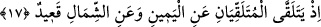

Orada ne dane bırakır ne de saman.
Ebû Yezîd Bistâmî (k.s.) şöyle söyler: “Yılanın derisinden sıyrılması gibi nefsimden
sıyrıldım. Bir de baktım ki ben O’yum”. Yani bir kimse nefsinin şehevî arzularından,
heva ve heveslerinden sıyrılırsa, orada Allah’tan başkasına yer kalmaz. O kimsenin
Allah Teâlâ’dan başka maksudu olmaz. Bir kalbe sadece Allah’ın cemâli ve celâli girer
ve o kalp buna tüm varlığıyla gömülürse “o, sanki O olur”. Hakiki anlamda “o, O
olmaz”. “o, sanki O’dur” sözü ile “o, O’dur” sözü arasında önemli derecede fark
olmakla birlikte “o sanki O’dur” sözü yerine “o, O’dur” ifadesi kullanılabilir. Nitekim
Zeyd’in cesaretini mübalağalı bir şekilde teşbih etmek için “gibi” ifadesi kaldırılarak
“Zeyd aslandır” denilir.
“Sülûkün ve vuslatın mânâsı nedir?” diye soracak olursan şöyle cevap veririm:
“Sülûkün mânâsı huyları, amelleri ve marifetleri süslemektir. Bu da zâhiri ve bâtını
imar etmekle meşgul olmaktır. Kul tüm bunları yaparken nefsini Rabbiyle meşgul eder.
Ayrıca vuslata ermek için bâtınını temizlemekle meşgul olur. Vuslat ise kişiye Hakk’ın
açık bir şekilde keşf olması ve kişinin O’nda müstağrak hâle gelmesidir. Bu kimse
mârifetine baksa Allah’tan başkasını bilmez. Kalbindeki niyet ve düşüncesine baksa
Allah’tan başka bir düşünce ve niyet bulamaz. Kul müşâhede ve düşünce bakımından
bütünüyle tamamen Allah ile meşgul olur. Bu duruma eren kimse artık zâhirini ibâdetle
bâtınını da ahlâkını güzelleştirmekle îmar etmek için nefsine iltifat etmez. Bunlar
tahârettir ve tahâret de başlangıçtır. Nihâyet ise kişinin küllî anlamda nefsinden sıyrılıp
soyutlanmasıdır. Böylece “o, sanki O olur.” İşte vuslat da budur. İmâm Gazâli’nin
Şerhu’l-esmâi’l-husnâ isimli eserinde de bu durum böylece ifade edilmektedir.
17. İki melek (insanın) sağında ve solunda oturarak yaptıklarını yazmaktadırlar.
Bu âyetteki mânâ şöyledir: O, bilgisi en gizli olan şeye dahi ulaşan latîf olandır. İki
koruyucu, yani iki görevli melek, insanın konuştuğu ve hakkında fikir beyan ettiği şeyleri
kaydettiğinde, öğrendiğinde ve aldığında O, insana yakın olan her şeyden daha yakındır.
Yani ikinci veçhe göre şuna işâret edilmiştir: Allah Teâlâ’nın ilmi o ikisine gizli kalan
şeyleri de kapsadığı için onları kayıt altına aldırmaktan müstağnîdir. Buna rağmen bu iki
meleğin kulların amellerini yazmalarında, muhâfaza etmelerinde, kıyamet gününde
sahifelerin arz edilmesinde ve kulun hallerini Allah’ın ayrıntılı bir şekilde bilmesine
rağmen kulun bunu bilmesinde kulun kötülüklerden sakınması ve iyiliklere rağbet etmesi
bakımından ona daha fazla ilâhî bir lütuf vardır.
Hz. Peygamber (s.a.) şöyle buyurmuştur: “İki meleğinin oturdukları yer ön dişlerinin
bulunduğu yerdir, dilin kalemleri ve tükürüğün mürekkepleridir.[237]” Buna rağmen